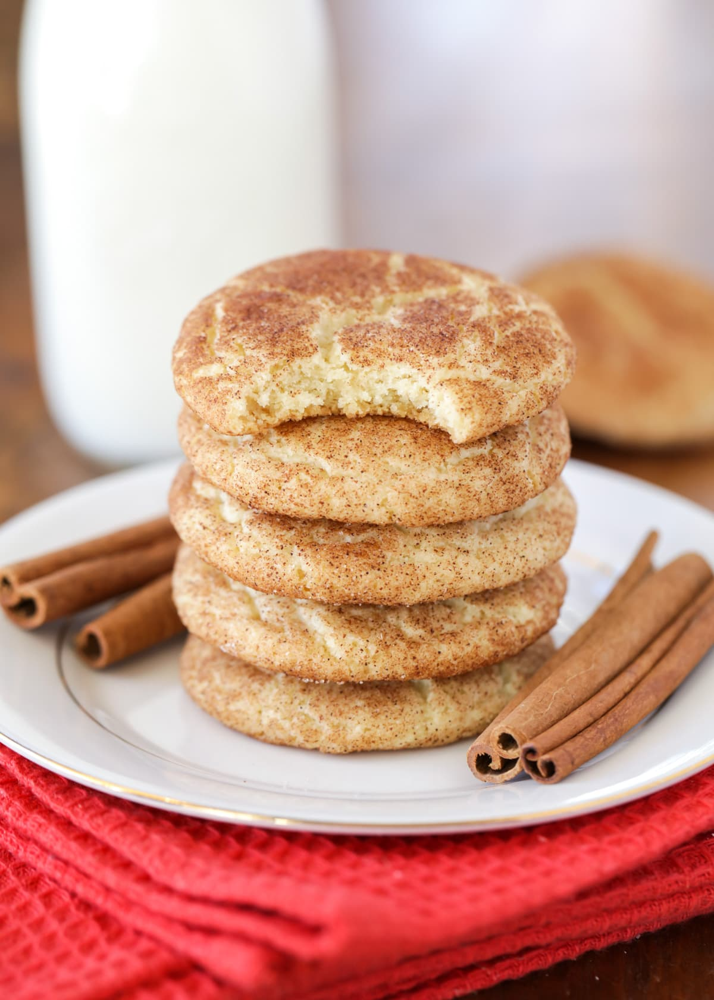

Snickerdoodle Recipe

Absolutely useless information that you will skip before the actual ingredients and recipe
One time I had an allergic reaction and was on death's door before someone put a snickerdoodle in my mouth and saved my life. Is that story true? Absolutely not! But I swear, every recipe page I come across has a story like this. Think of how much time you can save by skipping a story nobody's gonna read anyway, and actually just get to the recipe.
Speaking of...
Snickerdoodle Dough Ingredients
- 2 ¾ cups all-purpose flour
- 2 teaspoon cream of tartar
- 1 teaspoon baking soda
- ½ teaspoon salt
- 1 cup unsalted butter, just softened
- 1 ½ cups sugar
- 2 eggs
- 1 teaspoon vanilla extract
Cinnamon Sugar Coating Ingredients
- ⅓ cup sugar
- 2 tablespoons cinnamon
Instructions
- Preheat oven to 350°F.
- In a large bowl, mix together flour, cream of tartar, baking soda, and salt together. Set aside.
- In a stand mixer, cream together butter (barely softened) and sugar. Add eggs and vanilla and blend well.
- Add dry ingredients to wet ingredients and mix well.
- In a small bowl, combine remaining ⅓ cup sugar and 2 tablespoons cinnamon.
- Use a small cookie scoop to scoop out dough, roll into a ball and then roll into the cinnamon sugar mixture- twice.
- Place 2 inches apart on an ungreased cookie sheet.
- Bake for 8 – 10 minutes. Let sit on the cookie sheet for a few additional minutes before removing to a wire rack to cool.
Back to the main page